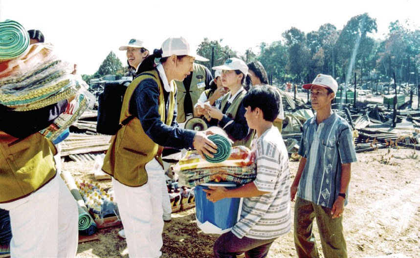
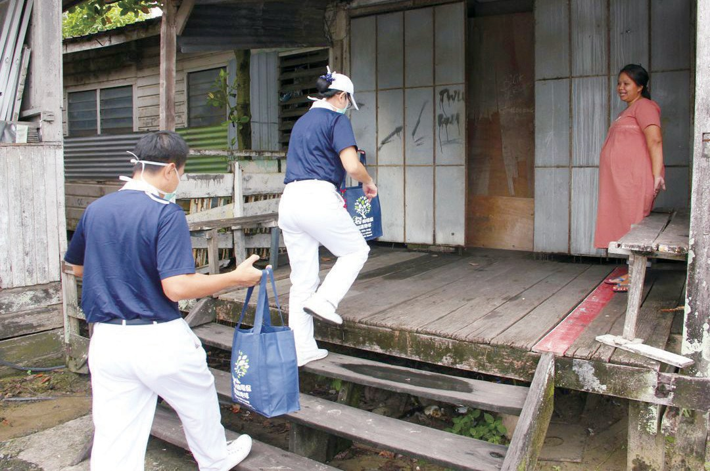
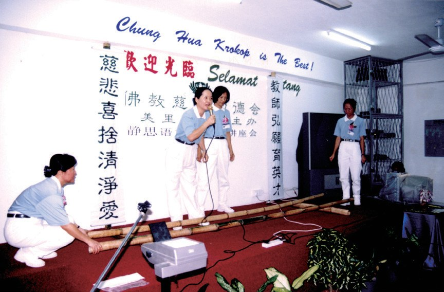
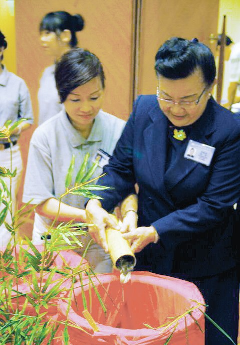
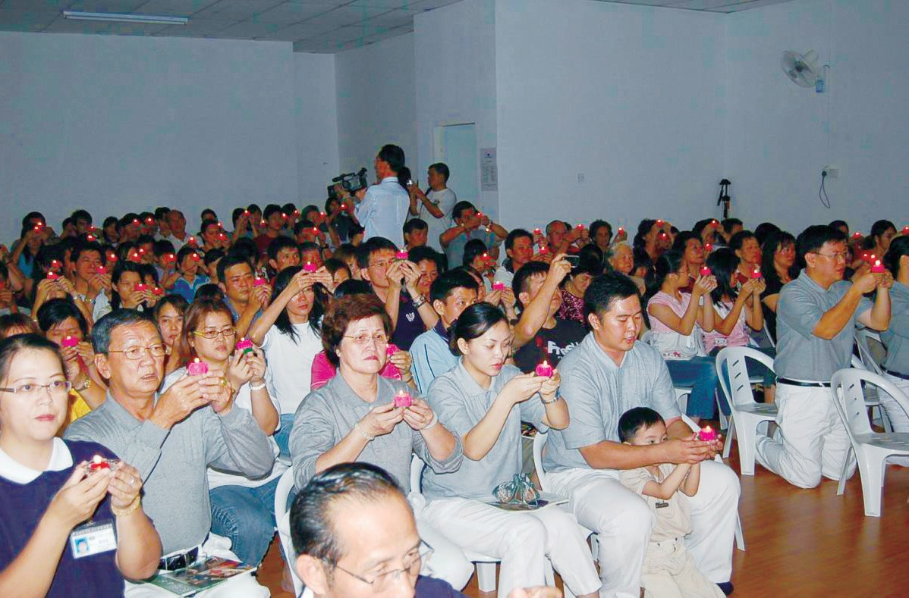
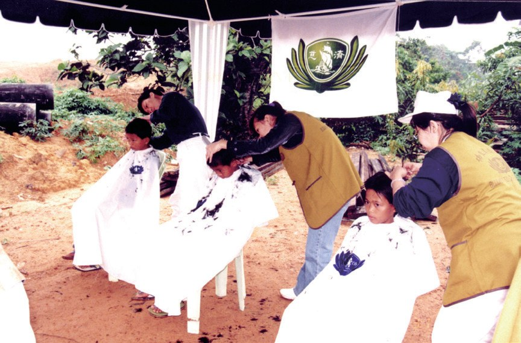

美里聯絡處
一則報紙新聞，牽起了什麼緣？

先別急著下結論，讀完再說說你的想法～
這一篇講美里聯絡處：從一本書、一間美容院開始，慈濟走進砂拉越北部，也走到了民都魯。
你會讀到一位說「這是奇蹟」的印尼媽媽、一張八十歲阿嬤縫的百衲被，還有一句「對的事，做就對了」。
下面是原書的節錄，紅色底線是我們替你標出的轉折點。
讀之前：在報紙上看到別人有困難，你會怎麼做？
美里的種子
1996年，因緣還不夠。閱讀引導
沈金璉（慈洹）到慈濟古晉負責人賴奕娃在美里開設的美容院時，看到證嚴上人法照；聽著好友分享在古晉推動慈善和環保的事蹟，亦生起做好事的心。她願將慈濟的種子傳播到美里地區，但因為沒有慈濟人帶動，因緣不足，未有進一步推展。

可是沒有人帶……
1997年1月16日，慈濟於東馬巡迴推廣靜思語教學，簡慈露特地聯繫美里的楊桂妹，楊桂妹提供自宅場地，邀約鄰居朋友參加。
多位美里民眾發心投入慈濟，願意協助會務推廣，同年7月25日美里聯絡點成立，由沈金璉承擔負責人。
種子終於發芽！
- 211人慈濟志工p.710
- 逾八千餘人會員p.710
從女嬰到印尼媽媽
美里的慈善，一個一個接力。閱讀引導
猜一猜閱讀引導
美里第一個慈善個案，是需要到吉隆坡動心臟手術的女嬰。志工協助向政府申請，獲得多少手術費？
2001年11月7日，美里汀渣區那伊長屋被大火夷為平地，造成六十九戶，約六百位居民頓失家園。

大家住哪裡？
美里志工得悉努莎哈拉的困境後，補助其生活用品與醫療費用，並陪同她做產檢。
由於努莎哈拉是外國公民，在馬來西亞生產要承擔高昂的生產費，孩子也無法申辦合法證件，因此志工協助她返國待產，為她預訂返程車票。

「我不曾想過會有一個佛教團體前來幫助我，對我而言這是一個奇蹟。……」
努莎哈拉感恩地說・p.714
一樣是一家人。
從皮膚癢到金牌獎
客工、孩子、企業，都動起來。閱讀引導
其中來自印尼的安東尼修，在瓜拉峇南工作已經九年。因為工作關係，他必須長期接觸木桐，導致皮膚發癢；在首次義診活動，使用醫生開出的藥物後痊癒。
孩子們受到靜思語的薰陶，瞭解了道理，進一步提升了課業的成績，也改善了校園內美善的氣氛，因而得到校方與家長的大力支持。


成績也進步了！
美里環保志業源於1999年，慈濟志工陳輝華參訪吉隆坡志工推動環保，很認同回收再利用，珍惜資源不浪費的理念；返回美里後，他接引好友楊謙佑一同加入慈濟推行環保。他們首先嘗試在三個社區推動，挨家挨戶回收資源，並用自己的卡車載送
三林企業為了響應環保，把其中一間儲存室改造成資源回收站，回收款項捐贈為慈善基金，幫助有需要的人。
- 逾一百三十萬公斤2013–2020年環保回收p.718
- 469人濱海城淨灘p.718
- 逾八噸淨灘清理的廢棄物p.718
一張百衲被
美里慈濟人要蓋靜思堂。閱讀引導
美里實業家楊雲清與黃月娥夫妻是慈濟榮董，參加臺灣慈濟實業家生活營後讓兩人深入瞭解慈濟，對慈濟在世界各地的付出深為感動。2018年，印尼雅加達舉辦馬印實業家聯誼會，夫妻倆前往印尼靜思堂參訪，有感於美里慈濟人也需要一個家
一個自己的家！
2019年，美里慈濟找到一塊位於美里廉律區山頂花園的土地，大家評估各項措施，回臺向上人請示是否能興建靜思堂，上人即給予祝福
5月是華人的端午節節慶，美里慈濟舉辦七場素粽義賣，志工首場就製作了1,200粒粽子。

都是為了蓋家！
「雖然我要八十歲了，眼睛也不太行，但是我盡自己的能力，慢慢縫製百衲被募款，很慶幸我有緣可以做上人的弟子，能成就美里慈濟人的靜思堂。」
楊月清說・p.722對的事，做就對了
美里的負責人，和民都魯的第一位志工。閱讀引導
沈金璉（慈洹）於1957年生於美里，在機場經營飲食生意。1990年，她的先生因病往生，當時她僅三十三歲，獨自撫養兩個才就讀小學和幼稚園的女兒，母兼父職擔起家中的經濟重擔。
一開始，人力不足，經費有限，為了成就一個慈濟的道場，沈金璉發心承擔起租用會所空間的租金。
還承擔會所租金！
沈金璉深深感受加入慈濟因緣難得，此生有幸能成為證嚴上人的弟子，就要把握分秒，「對的事，做就對了」。
2004年，民都魯居民貝秋雲從報紙上獲悉一位母親帶著數位孩子露宿街頭，因此聯繫好友古晉慈濟志工彭玉蓮，評估是否能提供援助。

就去找人幫忙！
美里志工即驅車至民都魯，與貝秋雲前往家訪瞭解；此個案關懷的因緣，牽起當地與慈濟的緣分。

2011年的農曆新年，七十二歲的貝秋雲因病在昏迷中逝世。多年來貝秋雲在民都魯的付出，充實了她的人生，也使生命因行善而圓滿。
停一停：誰讓你記住了？閱讀引導
選一位你印象最深的人。沒有標準答案。
有人一個人撐起家又撐起會所，有人看到報紙就去找人幫，有阿嬤眼睛不好還縫被子，有媽媽說這是奇蹟。哪一位讓你最有感覺？

一起回頭看看吧～
回望
依本章原文整理，每一條都標了原書頁碼。閱讀引導
背後原因
民都魯怎樣開始

小川民都魯本來沒有慈濟，後來怎麼會有共修處？
- 看到報紙
貝秋雲獲悉母子露宿街頭。p.719
- 就近關懷
美里志工驅車到民都魯家訪。p.719

成立共修處2005年初民都魯共修處成立。p.719
後續發展
美里一路走來

小禾從楊桂妹家的分享會到籌建靜思堂，經過了多少年？
- 1997.1.16
楊桂妹提供自宅，推廣靜思語教學。p.709
- 1998.7.25
美里聯絡點成立。p.710
- 2001.9.23
志工到美里老人院歡慶中秋。p.710
- 2002.8.31
瑟嵐長屋發放及義診。p.712

- 2005
民都魯共修處成立。p.719
- 2019
找到土地，籌建靜思堂。p.721
努莎哈拉的轉變
以前和後來
小川志工陪伴之後，努莎哈拉有什麼不同？
- 無依無靠，沒做產檢志工陪同她做產檢p.714
- 負擔不起生產費志工協助她返國待產p.714
- 獨自滯留馬來西亞與先生開心團聚p.714
以上只整理本章寫到的事；書裡沒寫到的，我們不替它下結論。
回頭看讀前的選擇閱讀引導
貝秋雲看到報紙，聯繫古晉志工，美里志工驅車去家訪（p.719）；這個個案牽起了民都魯與慈濟的緣分（p.719）。看到了就去找人幫，一個人的一念，帶出了一個共修處。
她的孩子平安出生了嗎？
只有你自己看得到喔！
準備好了就一起出發～